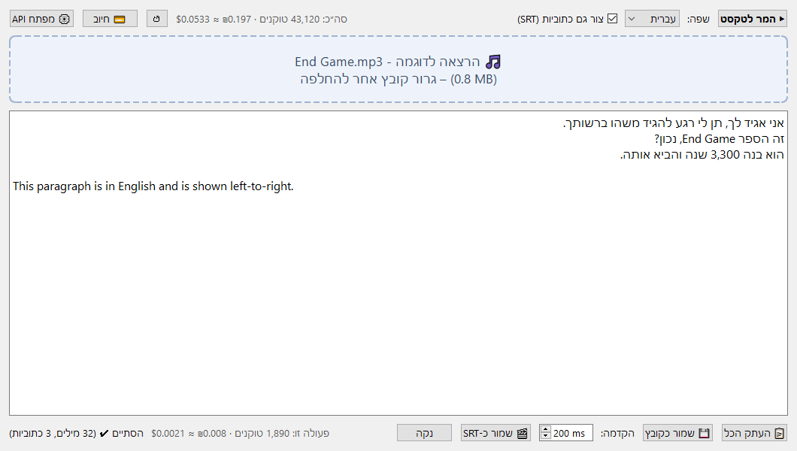

Mp3toText – תיעוד הפרויקט
אפליקציית דסקטופ ל-Windows שממירה קובצי אודיו (MP3 ועוד) לטקסט באמצעות Gemini API של גוגל. אפשר גם ליצור ממנה קובץ כתוביות SRT עם חותמות זמן. הממשק בעברית, מימין לשמאל, עם תמיכה מלאה בטקסט דו-כיווני (עברית ואנגלית באותו מסמך).
1. התקנה
דרישות:
- Windows 10 ומעלה
- Python 3.10 ומעלה
- מפתח Gemini API. הדרך הפשוטה להשיג אותו: https://aistudio.google.com/apikey ← Create API key
התקנת הספריות (מתוך תיקיית הפרויקט):
pip install -r requirements.txt
| ספרייה | תפקיד |
|---|---|
PySide6 |
ממשק המשתמש (Qt), כולל גרירת קבצים ותמיכה בעברית מימין לשמאל |
google-genai |
ה-SDK הרשמי של גוגל לתקשורת עם Gemini |
2. הפעלה ושימוש
הפעלה
- לחיצה כפולה על
run.bat. הקובץ מפעיל אתapp.pyעםpythonw, כך שלא נפתח חלון שורת פקודה. - או משורת הפקודה:
python app.py
מבנה החלון

סרגל עליון (מימין לשמאל): המר לטקסט · שפה · צור גם כתוביות (SRT) · סה״כ טוקנים ועלות · ↺ איפוס · 💳 חיוב · ⚙ מפתח API
באמצע: אזור הגרירה, ומתחתיו תיבת הטקסט (פסקה בעברית מימין לשמאל, פסקה באנגלית משמאל לימין).
סרגל תחתון (מימין לשמאל): העתק הכל · שמור כקובץ · הקדמה · שמור כ-SRT · נקה · עלות הפעולה האחרונה · סטטוס
שלבי עבודה
- מפתח API (פעם אחת): לוחצים ⚙ מפתח API ומדביקים את המפתח. הוא נשמר ב-
config.json. אפשר במקום זה להגדיר משתנה סביבהGEMINI_API_KEY. אין לך מפתח? בחלון המפתח יש כפתור 🔑 קבלת מפתח ב-Google AI Studio שפותח את https://aistudio.google.com/api-keys. - טעינת קובץ: גוררים קובץ אודיו לחלון (לאזור הגרירה או לכל מקום בחלון), או לוחצים על אזור הגרירה ובוחרים קובץ. נתמכים:
mp3,wav,m4a,ogg,flac,aac. - שפה: בוחרים את שפת הדיבור באודיו (עברית / English / Română). המודל מתמלל באותה שפה ולא מתרגם.
- כתוביות (לא חובה): מסמנים צור גם כתוביות (SRT) אם רוצים גם חותמות זמן.
- המרה: לוחצים ▶ המר לטקסט. פס ההתקדמות פועל, והממשק נשאר זמין בזמן ההמרה.
- שימוש בתוצאה:
- אפשר לערוך את הטקסט ישירות בתיבה.
- 📋 העתק הכל מעתיק את כל הטקסט ללוח.
- 💾 שמור כקובץ שומר קובץ
.txt. חלון השמירה נפתח בתיקייה של קובץ האודיו, עם אותו שם בסיס. - 🎬 שמור כ-SRT (זמין רק אחרי המרה עם כתוביות) שומר קובץ.srtבאותו אופן. - הקדמה (ms): מקדים את זמן ההופעה של כל כתובית, כי חותמות הזמן של Gemini נוטות לאחר מעט. ברירת המחדל היא 200ms. אם הכתוביות עדיין מאחרות, מגדילים את הערך. - נקה מוחק את הטקסט ואת הכתוביות.
טוקנים ועלות
- למעלה: הסך הכולל מכל ההמרות (טוקנים, דולרים ושקלים). הסכום נשמר ב-
config.json, והכפתור ↺ מאפס אותו. - 💳 חיוב: פותח בדפדפן את דף החיוב של Google Cloud. שם רואים את החיוב בפועל ואת אמצעי התשלום, ואפשר לקבוע תקציב והתראות. הסכום שמוצג באפליקציה הוא הערכה בלבד.
- למטה: העלות של ההמרה האחרונה. כשמרחפים מעליה מוצג פירוט: אודיו נכנס, טקסט נכנס ופלט.
- המחיר מחושב לפי המחירון של שכבה בתשלום. בשכבה החינמית אין חיוב בפועל.
| סוג טוקן | מחיר ל-1M טוקנים (gemini-2.5-flash) |
|---|---|
| אודיו נכנס | $1.00 |
| טקסט נכנס (ההנחיה) | $0.30 |
| פלט (התמלול) | $2.50 |
להערכה: דקת אודיו היא כ-1,900 טוקנים, כלומר שעת תמלול עולה כ-20 סנט.
3. קובץ ההגדרות config.json
הקובץ נוצר אוטומטית ליד app.py ומתעדכן מתוך הממשק. הוא מופיע ב-.gitignore כי הוא מכיל את המפתח.
| מפתח | ברירת מחדל | משמעות | נקבע מ- |
|---|---|---|---|
api_key |
– | מפתח Gemini | כפתור ⚙ |
lang |
"he" |
שפת הדיבור: he / en / ro |
תיבת השפה |
srt |
false |
האם ליצור כתוביות | תיבת הסימון |
srt_lead_in_ms |
200 |
הקדמת הכתוביות במילישניות | שדה "הקדמה" |
totals |
{tokens, usd, runs} |
הסך המצטבר | אוטומטי / ↺ |
model |
"gemini-2.5-flash" |
שם המודל | עריכה ידנית |
usd_to_ils |
3.7 |
שער הדולר לשקל | עריכה ידנית |
prices |
– | דריסה או הוספה של מחירים למודל, לדוגמה {"gemini-2.5-pro": {"audio_in": 1.25, "text_in": 1.25, "out": 10}} |
עריכה ידנית |
4. מבנה הפרויקט
Mp3toText/
├── app.py # כל קוד האפליקציה (קובץ יחיד)
├── run.bat # הפעלה בלחיצה כפולה (pythonw, בלי חלון קונסולה)
├── requirements.txt # PySide6, google-genai
├── config.json # הגדרות משתמש + מפתח (לא ב-git)
├── README.md # תקציר והוראות מהירות
└── docs/
└── DOCUMENTATION.md # המסמך הזה
5. תיאור הקוד
כל הקוד נמצא בקובץ app.py ובנוי בשלוש שכבות:
flowchart TB
subgraph UI["שכבת ממשק – Thread ראשי"]
MW["MainWindow"]
DL["DropLabel"]
end
subgraph BG["שכבת עבודה – Thread רקע"]
TW["TranscribeWorker - QThread"]
end
subgraph PURE["פונקציות עזר טהורות"]
CFG["load_config / save_config"]
USE["extract_usage / usage_cost"]
SRT["parse_segments / segments_to_srt"]
end
API[("Gemini API")]
FILE[("config.json")]
DL -- "file_dropped / clicked" --> MW
MW -- "start" --> TW
TW -- "finished_ok / failed" --> MW
TW <--> API
TW --> SRT
TW --> USE
MW --> CFG
CFG <--> FILE
MW --> SRT
5.1 קבועים
| קבוע | תיאור |
|---|---|
CONFIG_PATH |
נתיב config.json, תמיד ליד app.py |
DEFAULT_MODEL |
gemini-2.5-flash |
AUDIO_EXTS |
מיפוי סיומת קובץ ← MIME type. משמש גם לבדיקה שהקובץ נתמך |
LANGUAGES |
קוד שפה ← (תווית בממשק, שם השפה באנגלית להנחיה) |
PROMPT |
ההנחיה לתמלול טקסט רגיל |
SRT_PROMPT + SRT_SCHEMA |
ההנחיה וסכמת ה-JSON לתמלול עם חותמות זמן. המודל מחזיר מערך של {start, end, text} |
MIN_SEG_SECONDS / DEFAULT_SEG_SECONDS |
אורך מינימלי (0.5 שנ׳) ואורך ברירת מחדל (2 שנ׳) לכתובית |
DEFAULT_LEAD_IN_MS |
הקדמת כתוביות ברירת מחדל (200ms) |
PRICES / DEFAULT_USD_TO_ILS |
מחירון ושער ברירת מחדל |
DROP_IDLE / DROP_HOVER |
עיצוב אזור הגרירה במצב רגיל ובזמן גרירה |
5.2 פונקציות עזר
| פונקציה | תפקיד |
|---|---|
load_config() / save_config(cfg) |
קריאה וכתיבה של config.json ב-UTF-8. קובץ פגום נקרא כהגדרות ריקות |
clean_key(key) |
מסירה מהמפתח תווים שאינם ASCII ורווחים, כמו סימני כיוון נסתרים שנדבקים בהעתקה |
lang_instruction(lang) |
בונה את ההוראה "האודיו בשפה X, תמלל ב-X ואל תתרגם" |
extract_usage(resp) |
מחלצת מ-usage_metadata את מספרי הטוקנים: אודיו נכנס, טקסט נכנס ופלט (כולל טוקני "חשיבה") |
usage_cost(usage, prices) |
מחשבת עלות בדולרים, או None אם אין מחיר למודל |
parse_timestamp(value) |
ממירה MM:SS.mmm, HH:MM:SS,mmm או מספר לשניות |
parse_segments(raw) |
ממירה את תשובת ה-JSON לרשימת (start, end, text) ממוינת ותקינה. ראו תרשים 6.3 |
format_srt_time(seconds) |
שניות ← HH:MM:SS,mmm |
apply_lead_in(segments, lead_in) |
מקדימה את זמן ההתחלה של כל כתובית בלי לרדת מתחת ל-0 ובלי חפיפה עם הכתובית הקודמת. זמני הסיום לא משתנים |
segments_to_srt(segments, lead_in) |
בונה את טקסט קובץ ה-SRT |
5.3 המחלקה TranscribeWorker(QThread)
מבצעת את כל התקשורת מול Gemini ב-thread נפרד, כדי שהממשק לא ייתקע בזמן ההמרה.
- קלט: מפתח, שם מודל, נתיב קובץ, האם לייצר SRT, שפה.
- אותות (Signals):
finished_ok(text, usage, segments): בהצלחה.segmentsריק אם לא התבקשו כתוביות.failed(message): בשגיאה.run(): 1. יוצרתgenai.Client. 2. מעלה את הקובץ ל-Files API כזרם בייטים עם שם ASCII קבוע (audio.mp3). ראו 7.1. 3. בונהGenerateContentConfig:temperature=0ותקרת פלט של 65,536 טוקנים. במצב SRT מוגדרים גםresponse_mime_type=application/jsonו-response_schema. במודלי flash מכובה ה"חשיבה" (thinking_budget=0). 4. קוראת ל-generate_contentעם ההנחיה והקובץ. 5. מוחקת את הקובץ מהשרת (בבלוקfinally, כך שזה קורה גם אם הייתה שגיאה). 6. במצב SRT מפענחת את הכתוביות ובונה מהן את הטקסט להצגה. 7. משדרתfinished_okאוfailed.
5.4 המחלקה DropLabel(QLabel)
אזור הגרירה. מקבל קבצים בגרירה (dragEnterEvent / dropEvent), משנה צבע בזמן ריחוף ומשדר:
file_dropped(path): כשנגרר קובץ.clicked(): בלחיצה, ואז נפתח חלון בחירת קובץ.
5.5 המחלקה MainWindow(QMainWindow)
החלון הראשי. מחזיקה את ההגדרות (self.cfg), את הקובץ הנוכחי (self.file_path), את ה-worker הפעיל (self.worker) ואת הכתוביות האחרונות (self.segments).
| קבוצה | מתודות | תיאור |
|---|---|---|
| בנייה | __init__ |
בניית הממשק: סרגל עליון, אזור גרירה, תיבת טקסט, סרגל תחתון |
| הגדרות | on_srt_toggled, on_lang_changed, on_lead_changed |
כל שינוי בממשק נשמר מיד ל-config.json |
| מפתח | get_api_key, ask_api_key |
המפתח נלקח מ-config.json, ואם אין שם, מ-GEMINI_API_KEY |
| טעינה | browse, load_file, dragEnterEvent, dropEvent |
בדיקת סיומת, עדכון אזור הגרירה, איפוס כתוביות ישנות |
| המרה | convert, _finish, on_done, on_error |
הפעלת ה-worker וטיפול בתוצאה. self.worker משמש גם כ"נעילה" שמונעת המרה כפולה |
| עלות | prices_for, format_usage, update_total_label, reset_totals |
חישוב ותצוגה של טוקנים ועלות |
| פלט | copy_all, save_text, save_srt, clear_output, set_segments |
העתקה, שמירה וניקוי |
5.6 main()
יוצרת QApplication, מגדירה כיוון RTL לכל האפליקציה (Qt.RightToLeft) וגופן Segoe UI, ומציגה את החלון.
6. תרשימי זרימה
6.1 זרימת המשתמש
flowchart TD
A(["הפעלת run.bat"]) --> B{"יש מפתח API?"}
B -- "לא" --> C["הודעה בשורת הסטטוס:<br/>לחץ על ⚙ מפתח API"]
C --> D["הזנת מפתח ← נשמר ב-config.json"]
B -- "כן" --> E
D --> E["גרירת קובץ / לחיצה על אזור הגרירה"]
E --> F{"סיומת נתמכת?"}
F -- "לא" --> G["אזהרה: קובץ לא נתמך"] --> E
F -- "כן" --> H["הקובץ נטען<br/>כפתור ההמרה מופעל"]
H --> I["בחירת שפה<br/>סימון SRT – לא חובה"]
I --> J["▶ המר לטקסט"]
J --> K{"הצלחה?"}
K -- "לא" --> L["חלון שגיאה"] --> J
K -- "כן" --> M["הטקסט מוצג<br/>עדכון טוקנים ועלות"]
M --> N["העתק הכל"]
M --> O["שמור כ-TXT"]
M --> P{"התבקשו כתוביות?"}
P -- "כן" --> Q["כיוון הקדמה ← שמור כ-SRT"]
6.2 תהליך ההמרה (Threads ו-API)
sequenceDiagram
autonumber
actor U as משתמש
participant MW as MainWindow<br/>thread ראשי
participant TW as TranscribeWorker<br/>thread רקע
participant G as Gemini API
U->>MW: לחיצה על ▶ המר לטקסט
MW->>MW: בדיקת מפתח, נעילת כפתור, הצגת פס התקדמות
MW->>TW: start()
TW->>G: files.upload – זרם בייטים, שם audio.mp3
G-->>TW: uploaded file handle
TW->>G: generate_content(prompt + file, config)
G-->>TW: טקסט או JSON + usage_metadata
TW->>G: files.delete – בתוך finally
alt מצב SRT
TW->>TW: parse_segments ← בניית טקסט מהכתוביות
end
alt הצלחה
TW-->>MW: finished_ok(text, usage, segments)
MW->>MW: הצגת טקסט, חישוב עלות, עדכון totals ב-config.json
else שגיאה
TW-->>MW: failed(message)
MW->>U: חלון שגיאה
end
MW->>MW: _finish – שחרור הכפתור והסתרת פס ההתקדמות
6.3 עיבוד כתוביות ושמירת SRT
flowchart TD
A["תשובת JSON מהמודל"] --> B{"json.loads הצליח?"}
B -- "כן" --> D["רשימת אובייקטים"]
B -- "לא – JSON קטוע" --> C["חילוץ כל אובייקט {...} שלם<br/>באמצעות regex"] --> D
D --> E["לכל אובייקט: ניקוי רווחים בטקסט,<br/>המרת start/end לשניות"]
E --> F{"יש טקסט ו-start?"}
F -- "לא" --> X["דילוג"]
F -- "כן" --> G["מיון לפי זמן התחלה"]
G --> H{"end חסר או ≤ start?"}
H -- "כן" --> I["end = start + 2 שנ׳"]
H -- "לא" --> J
I --> J{"end חופף לכתובית הבאה?"}
J -- "כן" --> K["end = max(next_start, start + 0.5)"]
J -- "לא" --> L
K --> L["segments – שמורים בזיכרון"]
L --> M["לחיצה על 🎬 שמור כ-SRT"]
M --> N["apply_lead_in:<br/>start = max(start − lead_in, prev_end, 0)"]
N --> O["format_srt_time ← בלוקים ממוספרים"]
O --> P["כתיבה ב-UTF-8 עם BOM"]
6.4 חישוב עלות וסה״כ מצטבר
flowchart LR
A["usage_metadata"] --> B["extract_usage"]
B --> C["audio_in = טוקני AUDIO"]
B --> D["text_in = prompt − audio"]
B --> E["out = candidates + thoughts"]
C & D & E --> F{"יש מחיר למודל?<br/>PRICES + config.prices"}
F -- "כן" --> G["usd = Σ טוקנים × מחיר / 1M"]
F -- "לא" --> H["רק טוקנים, בלי מחיר"]
G --> I["₪ = usd × usd_to_ils"]
I --> J["תווית: פעולה זו"]
H --> J
G --> K["totals += tokens, usd, runs<br/>save_config"]
K --> L["תווית: סה״כ"]
7. החלטות תכנון
7.1 שם קובץ בעברית
ה-SDK של Gemini שולח את שם הקובץ בכותרת HTTP, שבה מותרים רק תווי ASCII. קובץ בשם עברי נכשל בשגיאה 'ascii' codec can't encode. הפתרון: הקובץ נפתח ונשלח כזרם בייטים עם display_name קבוע באנגלית (audio.mp3). הקובץ המקורי לא משתנה.
7.2 Qt במקום Tkinter
הגרסה הראשונה נכתבה ב-Tkinter. תיבת הטקסט שם מציגה כל שורה בכיוון בסיס משמאל לימין, ולכן סימני פיסוק הופיעו בצד הלא נכון וטקסט מעורב התבלבל. Qt (QTextEdit) מזהה את הכיוון של כל פסקה בנפרד לפי התו החזק הראשון: פסקה בעברית מוצגת מימין לשמאל, פסקה באנגלית משמאל לימין.
7.3 בידוד כיוון בתוויות העלות
בתוויות מימין לשמאל, צירוף כמו $0.0053 ≈ ₪0.020 מתבלבל. החלק הכספי עטוף בתווי Unicode U+2066 (LRI) ו-U+2069 (PDI), שמבודדים אותו ושומרים עליו משמאל לימין.
7.4 כיבוי "חשיבה"
בתמלול אין צורך ב"חשיבה" של המודל, וטוקני חשיבה מחויבים במחיר הפלט. במודלי flash מוגדר thinking_budget=0.
7.5 כתוביות כ-JSON מובנה
במקום לבקש מהמודל SRT כטקסט חופשי, מבקשים JSON לפי סכמה (response_schema). זה מאפשר בדיקה ותיקון של הזמנים: מיון, השלמת זמן סיום חסר ומניעת חפיפות. ב-JSON שנקטע (למשל בקובץ ארוך שהגיע לתקרת הפלט) נשמרים כל האובייקטים השלמים שהתקבלו.
7.6 הקדמת כתוביות
חותמות הזמן של Gemini נוטות לאחר במעט. ההקדמה מוחלת רק בשמירה, ולכן אפשר לשנות אותה ולשמור שוב בלי המרה נוספת.
7.7 SRT עם BOM
קובץ ה-SRT נשמר ב-utf-8-sig, כלומר UTF-8 עם BOM, כדי שנגנים ועורכים ישנים יזהו את הקידוד ויציגו עברית נכון.
7.8 מחיקת הקובץ מהשרת
הקובץ שהועלה ל-Files API נמחק מיד בתום ההמרה, בבלוק finally, גם אם הייתה שגיאה. כך האודיו לא נשאר בשרתי גוגל לאחר הצורך.
8. פתרון תקלות
| הודעה / תופעה | סיבה | פתרון |
|---|---|---|
'ascii' codec can't encode characters |
שם קובץ בעברית בגרסה ישנה, או תו נסתר במפתח | עדכון לגרסה הנוכחית (שתי הבעיות מטופלות) |
403 PERMISSION_DENIED ... SERVICE_DISABLED |
המפתח שייך לפרויקט Google Cloud שבו Gemini API לא מופעל (למשל מפתח של Translate) | ליצור מפתח ב-https://aistudio.google.com/apikey |
API key not valid |
מפתח שגוי | להזין מחדש דרך ⚙ מפתח API |
לא התקבל טקסט מהמודל |
המודל החזיר תשובה ריקה (קובץ שקט, חסימת תוכן) | לבדוק את הקובץ ולנסות שוב |
לא ניתן היה לפענח כתוביות |
תשובת ה-JSON לא תקינה | לנסות שוב. אם זה חוזר, להמיר בלי SRT |
| הכתוביות מאחרות או מקדימות | סטייה בחותמות הזמן של Gemini | לשנות את ערך "הקדמה" ולשמור שוב (בלי המרה מחדש) |
| תמלול קטוע בקבצים ארוכים מאוד | הגעה לתקרת הפלט (65,536 טוקנים) | לפצל את הקובץ לחלקים |
| המחיר מוצג אבל לא חויבתי | שימוש בשכבה החינמית | זה תקין: המחיר הוא הערכה לפי שכבה בתשלום |